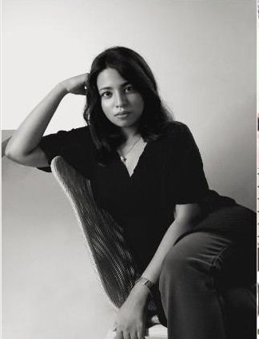
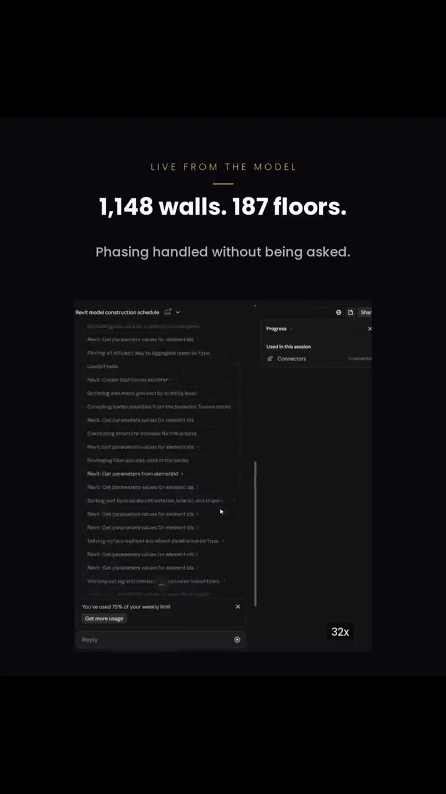
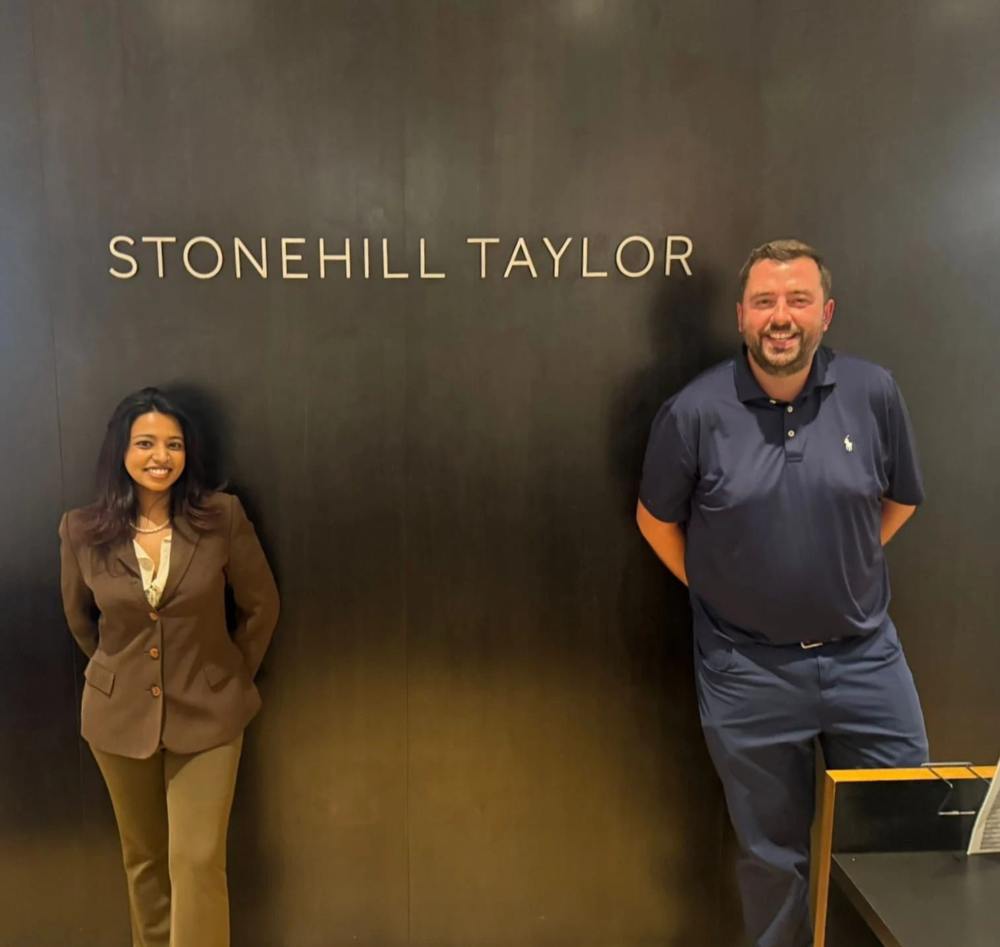
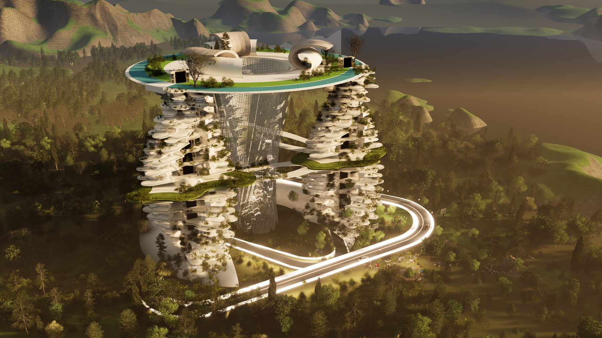
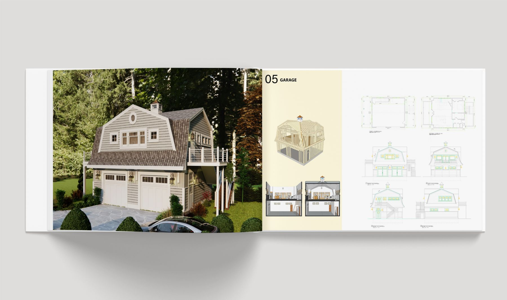
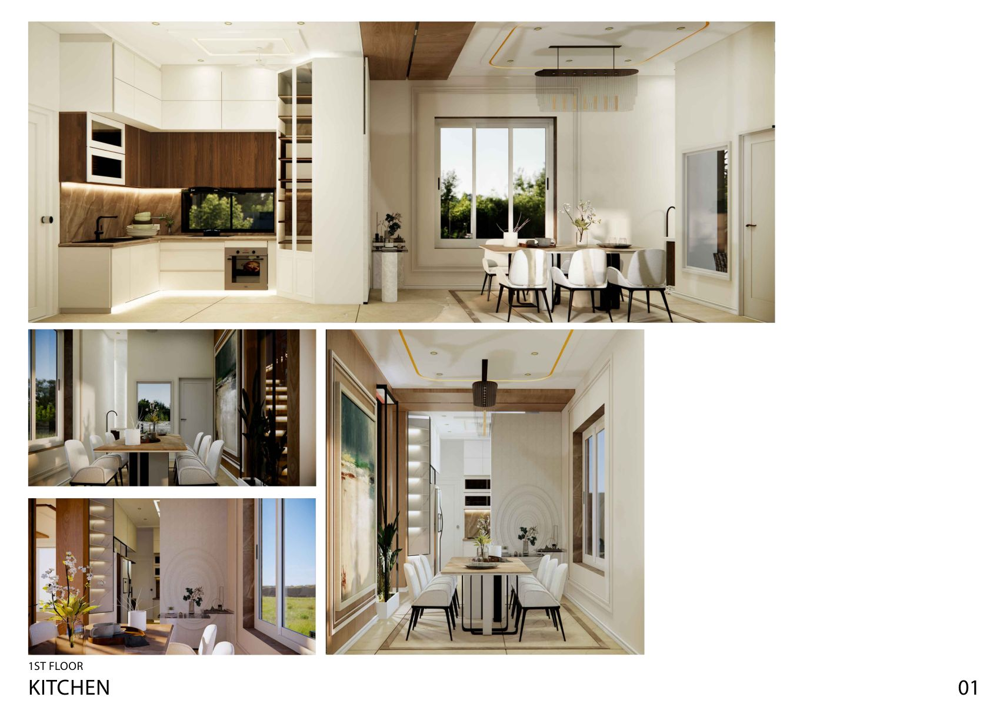
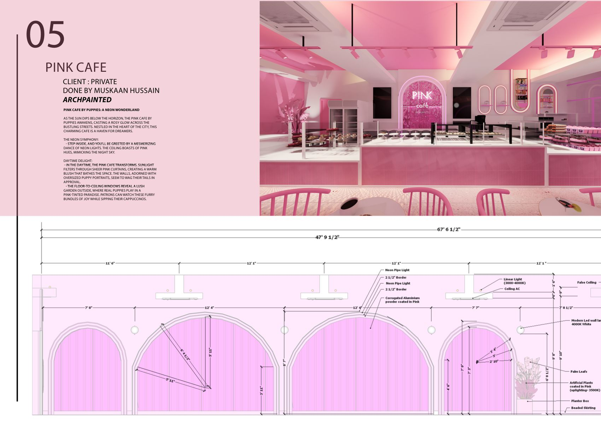
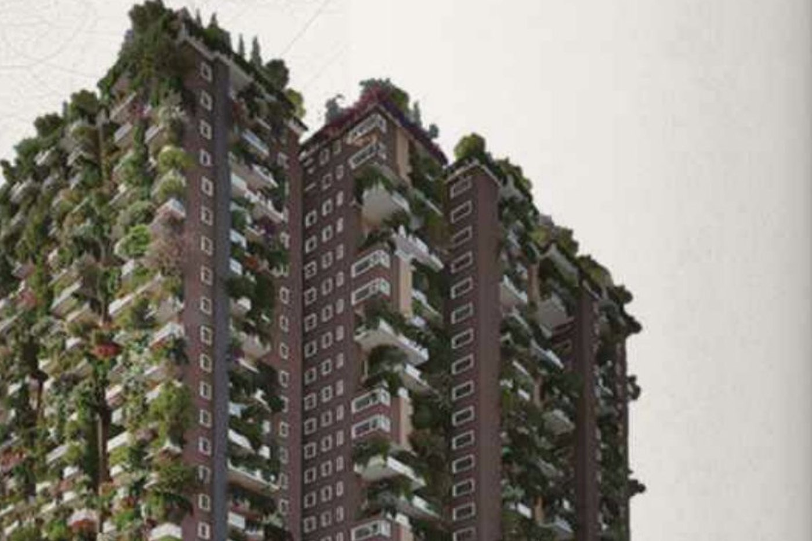
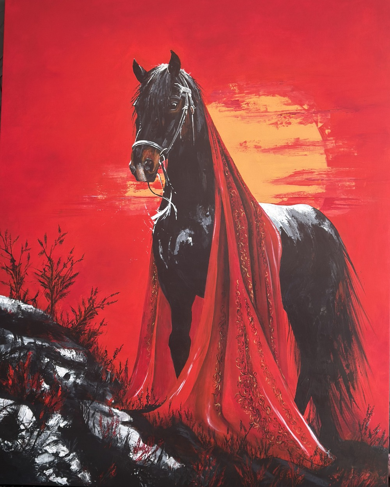

Registered architect, now a construction manager and BIM / VDC coordinator. I coordinate the model and the jobsite, and build the tools that keep them connected.









I grew up beside my father's easel, trained as an architect in Hyderabad, ran my own interiors practice, and moved into construction management because the jobsite is where drawings meet reality. Now I work between the site and the technology. The longer story →